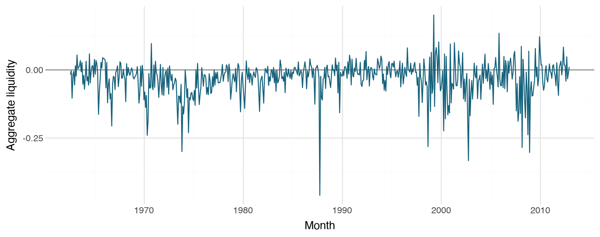
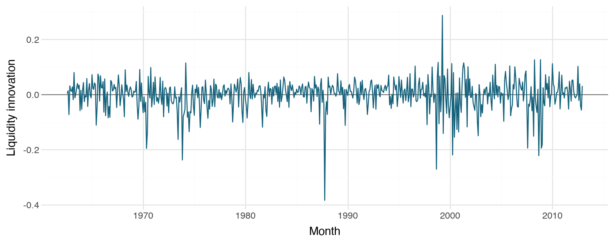
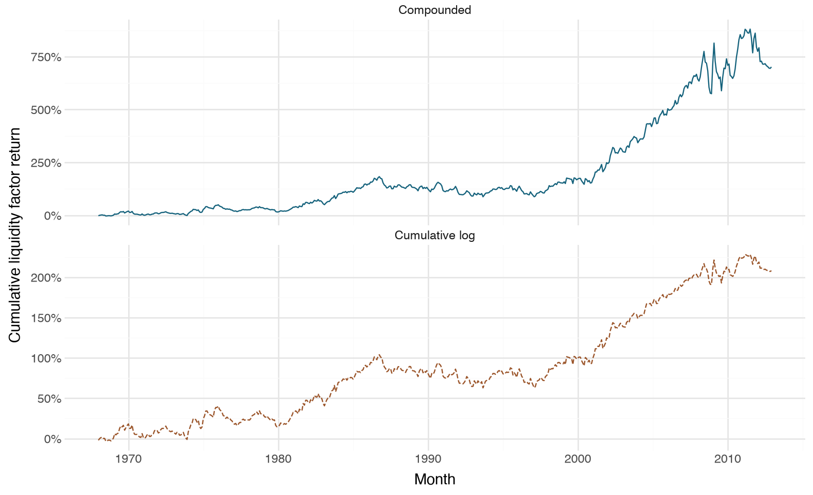

import polars as pl
from era_pl import load_parquet
from eap_pl import build_book_to_market, build_momentum, build_sizes, monthly_panel
keys = ["permno", "month"]
first = pl.date(1963, 6, 1)
last = pl.date(2012, 11, 1)
minimum_days = {1: 15, 3: 50, 6: 100, 12: 200}
raw = {f"illiq{k}": f"`illiq{k}`" for k in minimum_days}
logged = {f"log_{term}": f"`log_{term}`" for term in raw}
measures = raw | logged
sizes = build_sizes()
book_to_market = build_book_to_market(sizes).select(*keys, "bm")
stock_months = (
load_parquet("msf", "crsp")
.filter(pl.col("date").is_between(first, last.dt.offset_by("1mo").dt.month_end()))
.select("permno", month=pl.col("date").dt.month_start(),
stock_return=pl.when(pl.col("ret").is_finite()).then(pl.col("ret")))
)
monthly_factors = (
load_parquet("factors_monthly", "ff")
.select("rf", month=pl.col("date").dt.month_start(),
mkt=100 * pl.col("mktrf"), smb=100 * pl.col("smb"), hml=100 * pl.col("hml"))
.collect()
)
unadjusted = (
stock_months.collect()
.join(monthly_factors.select("month", "rf"), on="month", validate="m:1")
.select("permno", month=pl.col("month").dt.offset_by("-1mo"),
unadjusted=100 * (pl.col("stock_return") - pl.col("rf")))
)
formation = (
monthly_panel(sizes, first, last)
.join(book_to_market, on=keys, how="left", validate="1:1")
.join(build_momentum(first, last).select(*keys, "mom"), on=keys, how="left", validate="1:1")
.join(stock_months.select(*keys, rev=100 * pl.col("stock_return")).collect(),
on=keys, how="left", validate="1:1")
.join(unadjusted, on=keys, how="left", validate="1:1")
)13 Liquidity
Following Chapter 13 of Bali et al. (2016), we ask whether less liquid stocks earn higher subsequent returns. We estimate Amihud illiquidity from legacy CRSP daily data and examine the Pástor–Stambaugh liquidity factors separately. The former measures how much an individual stock’s price moves for a given trading volume. The latter measure marketwide liquidity and exposure to changes in it.
13.1 Measuring Illiquidity
The measure of Amihud (2002) averages the absolute daily return per million dollars traded. For a window of \(k\) calendar months ending in formation month \(t\), let \(\mathcal D_{i,t}^{(k)}\) be the usable trading days and let \(D_{i,t}^{(k)}\) be their count.
\[ \operatorname{Illiq}_{i,t}^{(k)} =\frac{1}{D_{i,t}^{(k)}}\sum_{d\in\mathcal D_{i,t}^{(k)}} \frac{|R_{i,d}|}{P_{i,d}Q_{i,d}/10^6}. \tag{13.1}\]
\(R_{i,d}\) is the decimal CRSP return, \(P_{i,d}\) is the closing trade price, and \(Q_{i,d}\) is the number of shares traded. We require a finite return and strictly positive price and volume. A negative CRSP price denotes a bid–ask average, which BEM exclude for this measure. The minimum counts for the one-, three-, six-, and twelve-month windows are 15, 50, 100, and 200 usable days. We also use \(\log(1+\operatorname{Illiq}_{i,t}^{(k)})\), which reduces the influence of large values without changing their ranks.
Pool the daily ratios and counts over each window so that each usable day receives equal weight. The rolling windows use elapsed calendar months. Months without a usable day contribute zero to the sum and count.
daily = load_parquet("dsf", "crsp").filter(
pl.col("date").is_between(first.dt.offset_by("-11mo"), last.dt.month_end()),
pl.col("ret").is_finite(),
pl.col("prc").is_finite(),
pl.col("vol").is_finite(),
pl.col("prc") > 0,
pl.col("vol") > 0,
)
monthly = (
daily.with_columns(
month=pl.col("date").dt.month_start(),
daily_illiq=pl.col("ret").abs() / (pl.col("prc") * pl.col("vol") / 1e6),
)
.group_by(keys)
.agg(total=pl.col("daily_illiq").sum(), days=pl.len())
.collect()
.join(formation.select(keys), on=keys, how="full", coalesce=True, validate="1:1")
.with_columns(pl.col("total", "days").fill_null(0))
.sort(keys)
)
panel = formation
for k, minimum in minimum_days.items():
window = (
monthly.rolling(index_column="month", period=f"{k}mo", group_by="permno")
.agg(pl.col("total", "days").sum())
.select(*keys, pl.when(pl.col("days") >= minimum)
.then(pl.col("total") / pl.col("days")).alias(f"illiq{k}"))
)
panel = panel.join(window, on=keys, how="left", validate="1:1")
panel = panel.with_columns(pl.col(*raw).log1p().name.prefix("log_"))13.2 Summary Statistics, Correlations, and Persistence
The sample comprises the June 1963 through November 2012 formation months. We compute each descriptive statistic within month and then average over months.
from eap_pl import mean_cross_sections
summary = mean_cross_sections(panel, measures)
show_table(summary)| Measure | Mean | SD | Skew | Kurt. | Min | 5% | 25% | Median | 75% | 95% | Max | n |
|---|---|---|---|---|---|---|---|---|---|---|---|---|
illiq1 |
3.79 | 27.74 | 22.16 | 827.94 | 0.00 | 0.01 | 0.05 | 0.26 | 1.35 | 13.39 | 1174.73 | 3603 |
illiq3 |
2.88 | 18.03 | 20.10 | 685.47 | 0.00 | 0.01 | 0.05 | 0.24 | 1.17 | 10.70 | 687.69 | 3436 |
illiq6 |
2.76 | 15.75 | 18.35 | 568.58 | 0.00 | 0.01 | 0.05 | 0.25 | 1.19 | 10.66 | 560.23 | 3369 |
illiq12 |
2.70 | 14.01 | 16.52 | 452.30 | 0.00 | 0.01 | 0.05 | 0.26 | 1.23 | 10.81 | 452.60 | 3246 |
log_illiq1 |
0.57 | 0.84 | 2.50 | 8.10 | 0.00 | 0.01 | 0.05 | 0.20 | 0.73 | 2.39 | 6.22 | 3603 |
log_illiq3 |
0.53 | 0.79 | 2.51 | 8.09 | 0.00 | 0.01 | 0.05 | 0.20 | 0.68 | 2.24 | 5.85 | 3436 |
log_illiq6 |
0.54 | 0.79 | 2.43 | 7.51 | 0.00 | 0.01 | 0.05 | 0.20 | 0.70 | 2.26 | 5.72 | 3369 |
log_illiq12 |
0.55 | 0.79 | 2.35 | 6.82 | 0.00 | 0.01 | 0.05 | 0.21 | 0.72 | 2.29 | 5.59 | 3246 |
For Pearson correlations we winsorize each variable at the 0.5th and 99.5th percentiles of the paired monthly sample. Spearman correlations use the original ranks.
from eap_pl import correlation_matrix, period_correlations
controls = {"beta": "Beta", "log_cap": "Size", "bm": "`bm`", "mom": "`mom`", "rev": "`rev`"}
variables = measures | controls
correlations = period_correlations(panel, list(variables), "month")
show_table(correlation_matrix(correlations.select(pl.exclude("month").mean()).row(0, named=True), variables))| Measure | illiq1 |
illiq3 |
illiq6 |
illiq12 |
log_illiq1 |
log_illiq3 |
log_illiq6 |
log_illiq12 |
Beta | Size | bm |
mom |
rev |
|---|---|---|---|---|---|---|---|---|---|---|---|---|---|
illiq1 |
0.98 | 0.97 | 0.96 | 1.00 | 0.98 | 0.97 | 0.96 | -0.32 | -0.92 | 0.25 | -0.24 | -0.08 | |
illiq3 |
0.91 | 0.99 | 0.98 | 0.98 | 1.00 | 0.99 | 0.98 | -0.30 | -0.93 | 0.24 | -0.23 | -0.05 | |
illiq6 |
0.87 | 0.95 | 0.99 | 0.97 | 0.99 | 1.00 | 0.99 | -0.30 | -0.93 | 0.25 | -0.20 | -0.05 | |
illiq12 |
0.81 | 0.89 | 0.95 | 0.96 | 0.98 | 0.99 | 1.00 | -0.30 | -0.93 | 0.25 | -0.14 | -0.04 | |
log_illiq1 |
0.81 | 0.79 | 0.78 | 0.75 | 0.98 | 0.97 | 0.96 | -0.32 | -0.92 | 0.25 | -0.24 | -0.08 | |
log_illiq3 |
0.78 | 0.83 | 0.82 | 0.79 | 0.96 | 0.99 | 0.98 | -0.30 | -0.93 | 0.24 | -0.23 | -0.05 | |
log_illiq6 |
0.75 | 0.80 | 0.83 | 0.82 | 0.93 | 0.98 | 0.99 | -0.30 | -0.93 | 0.25 | -0.20 | -0.05 | |
log_illiq12 |
0.71 | 0.77 | 0.80 | 0.83 | 0.90 | 0.94 | 0.97 | -0.30 | -0.93 | 0.25 | -0.14 | -0.04 | |
| Beta | -0.15 | -0.15 | -0.15 | -0.15 | -0.27 | -0.25 | -0.26 | -0.25 | 0.33 | -0.23 | 0.04 | -0.01 | |
| Size | -0.42 | -0.44 | -0.45 | -0.46 | -0.69 | -0.70 | -0.71 | -0.71 | 0.31 | -0.26 | 0.25 | 0.11 | |
bm |
0.18 | 0.18 | 0.20 | 0.21 | 0.25 | 0.25 | 0.26 | 0.27 | -0.19 | -0.27 | 0.04 | 0.03 | |
mom |
-0.16 | -0.16 | -0.14 | -0.09 | -0.22 | -0.21 | -0.17 | -0.10 | 0.07 | 0.18 | 0.02 | 0.04 | |
rev |
-0.04 | -0.01 | -0.01 | -0.00 | -0.05 | -0.02 | -0.01 | -0.00 | -0.02 | 0.07 | 0.02 | 0.02 |
For persistence, we match the same stock across an exact calendar-month lag and average the cross-sectional correlations. We omit lags shorter than the estimation window to avoid overlap in the daily observations used to measure illiquidity.
from eap_pl import persistence
lags = [1, 3, 6, 12, 24, 36, 48, 60, 120]
persistence_table = persistence(panel, measures, lags)
show_table(persistence_table.with_columns(
pl.when(pl.col("Lag (months)") >= k).then(pl.col(label)).alias(label)
for k in minimum_days for label in (raw[f"illiq{k}"], logged[f"log_illiq{k}"])
))| Lag (months) | illiq1 |
illiq3 |
illiq6 |
illiq12 |
log_illiq1 |
log_illiq3 |
log_illiq6 |
log_illiq12 |
|---|---|---|---|---|---|---|---|---|
| 1 | 0.801 | 0.912 | ||||||
| 3 | 0.736 | 0.838 | 0.871 | 0.924 | ||||
| 6 | 0.671 | 0.756 | 0.813 | 0.829 | 0.876 | 0.910 | ||
| 12 | 0.579 | 0.640 | 0.683 | 0.745 | 0.763 | 0.799 | 0.829 | 0.869 |
| 24 | 0.450 | 0.493 | 0.525 | 0.569 | 0.664 | 0.686 | 0.713 | 0.749 |
| 36 | 0.377 | 0.410 | 0.435 | 0.472 | 0.602 | 0.617 | 0.640 | 0.672 |
| 48 | 0.332 | 0.360 | 0.382 | 0.416 | 0.559 | 0.572 | 0.592 | 0.623 |
| 60 | 0.307 | 0.331 | 0.349 | 0.377 | 0.533 | 0.542 | 0.560 | 0.588 |
| 120 | 0.245 | 0.270 | 0.285 | 0.301 | 0.467 | 0.474 | 0.490 | 0.511 |
13.3 Illiquidity and Stock Returns
We use next-month excess returns, including the delisting treatment in Section 7.2. One panel of Table 13.4 uses unadjusted CRSP returns to show the effect of including delistings. The risk models are the four-factor model in Equation 11.2 and that model augmented by the short-term reversal factor in Equation 12.2.
from io import StringIO
from pathlib import Path
import re
from eap_pl import format_fit, hac
from eap_pl._portfolios import assign_portfolio, portfolio_months, spread
def archived_factor(filename, name):
rows = re.findall(r"(?m)^\s*(\d{6},[^\r\n]+)", Path(filename).read_text())
return (
pl.read_csv(StringIO("\n".join(rows)), has_header=False,
new_columns=["ym", name], schema_overrides={name: pl.String})
.select(
pl.col(name).str.strip_chars().cast(pl.Float64).replace([-99.99, -999], None),
month=(pl.col("ym").cast(pl.String) + "01").str.to_date("%Y%m%d"),
)
)
factors = (
monthly_factors.drop("rf")
.join(archived_factor("data/momentum-202412.csv", "mom_factor"), on="month", validate="1:1")
.join(archived_factor("data/st-reversal-202412.csv", "str_factor"), on="month", validate="1:1")
)
ff = "mkt + smb + hml"
ffc = f"{ff} + mom_factor"
ffcstr = f"{ffc} + str_factor"
models = {"Return": "1", "FFC α": ffc, "FFCSTR α": ffcstr}
def factor_fit(series, weight, rhs):
sample = (
series.select(pl.col("month").dt.offset_by("1mo"), weight)
.join(factors, on="month", how="left", validate="1:1")
.drop_nulls(weight)
.sort("month")
)
return hac(f"{weight} ~ {rhs}", sample)
def spread_statistics(series, weight, specifications):
return {label: format_fit(factor_fit(series, weight, rhs), "Intercept")
for label, rhs in specifications.items()}13.3.1 Univariate Portfolio Analysis
We form monthly deciles using all eligible stocks with each measure, then compute equal- and value-weighted returns. Value weights use formation-month capitalization. The 10–1 portfolio buys the least liquid decile and sells the most liquid decile.
deciles = [str(i) for i in range(1, 11)]
characteristics = {"illiq12": raw["illiq12"], "log_illiq12": logged["log_illiq12"],
"beta": "Beta", "cap": "Market cap ($ millions)",
"bm": "`bm`", "mom": "`mom`", "rev": "`rev`"}
decile_results = {}
for term in raw:
members = assign_portfolio(panel.filter(pl.col(term).is_finite()), term, 10, "month")
metrics = [pl.col("unadjusted").mean().alias("EW unadjusted")]
if term == "illiq12":
metrics.extend(pl.col(col).mean().alias(label) for col, label in characteristics.items())
decile_results[term] = portfolio_months(members, ["portfolio"], metrics)means = (
decile_results["illiq12"].group_by("portfolio")
.agg(pl.col(*characteristics.values()).mean()).sort("portfolio")
)
show_table(pl.DataFrame([
{"Characteristic": label, **dict(zip(deciles, means[label]))}
for label in characteristics.values()
]))
for weight in ("EW", "EW unadjusted", "VW"):
rows = []
for term, label in raw.items():
monthly = decile_results[term].rename({weight: "outcome"})
means = monthly.group_by("portfolio").agg(pl.col("outcome").mean()).sort("portfolio")
long_short = spread(monthly, 10, 1, "portfolio", "outcome")
statistics = spread_statistics(long_short, "outcome", models)
rows.append({"Sort variable": label, **dict(zip(deciles, means["outcome"])),
"10–1": statistics.pop("Return"), **statistics})
show_table(pl.DataFrame(rows))
monthly = decile_results["illiq1"]
groups = monthly.partition_by("portfolio", as_dict=True)
fits = {str(i): factor_fit(groups[i,], "VW", ffcstr) for i in range(1, 11)}
fits["10–1"] = factor_fit(spread(monthly, 10, 1, "portfolio", "VW"), "VW", ffcstr)
terms = {"Intercept": "FFCSTR α", "mkt": "`mkt`", "smb": "`smb`", "hml": "`hml`",
"mom_factor": "`mom_factor`", "str_factor": "`str_factor`"}
show_table(pl.DataFrame([
{"Statistic": label, **{decile: format_fit(fit, term) for decile, fit in fits.items()}}
for term, label in terms.items()
]))| Characteristic | 1 | 2 | 3 | 4 | 5 | 6 | 7 | 8 | 9 | 10 |
|---|---|---|---|---|---|---|---|---|---|---|
illiq12 |
0.01 | 0.02 | 0.05 | 0.11 | 0.19 | 0.35 | 0.65 | 1.27 | 3.01 | 21.30 |
log_illiq12 |
0.01 | 0.02 | 0.05 | 0.09 | 0.16 | 0.27 | 0.45 | 0.73 | 1.24 | 2.49 |
| Beta | 1.11 | 1.07 | 1.06 | 1.03 | 1.00 | 0.95 | 0.86 | 0.76 | 0.66 | 0.60 |
| Market cap ($ millions) | 10271.07 | 1454.98 | 689.79 | 392.50 | 241.05 | 153.83 | 101.88 | 61.66 | 36.03 | 16.58 |
bm |
0.64 | 0.70 | 0.70 | 0.75 | 0.80 | 0.87 | 0.94 | 1.02 | 1.15 | 1.47 |
mom |
15.80 | 16.54 | 17.25 | 16.94 | 16.39 | 15.39 | 15.38 | 14.51 | 11.64 | 7.00 |
rev |
0.92 | 1.05 | 1.05 | 1.10 | 1.04 | 1.12 | 1.21 | 1.27 | 1.32 | 1.79 |
| Sort variable | 1 | 2 | 3 | 4 | 5 | 6 | 7 | 8 | 9 | 10 | 10–1 | FFC α | FFCSTR α |
|---|---|---|---|---|---|---|---|---|---|---|---|---|---|
illiq1 |
0.53 | 0.63 | 0.73 | 0.76 | 0.71 | 0.71 | 0.78 | 0.81 | 0.74 | 1.11 | 0.58 (1.95) |
0.47 (2.20) |
0.38 (1.88) |
illiq3 |
0.49 | 0.62 | 0.65 | 0.66 | 0.66 | 0.68 | 0.73 | 0.83 | 0.76 | 1.11 | 0.62 (2.01) |
0.47 (2.19) |
0.43 (2.09) |
illiq6 |
0.48 | 0.59 | 0.63 | 0.62 | 0.60 | 0.63 | 0.74 | 0.83 | 0.79 | 1.13 | 0.66 (2.15) |
0.46 (2.15) |
0.44 (2.13) |
illiq12 |
0.46 | 0.60 | 0.58 | 0.61 | 0.59 | 0.65 | 0.76 | 0.82 | 0.83 | 1.24 | 0.77 (2.54) |
0.47 (2.19) |
0.47 (2.24) |
| Sort variable | 1 | 2 | 3 | 4 | 5 | 6 | 7 | 8 | 9 | 10 | 10–1 | FFC α | FFCSTR α |
|---|---|---|---|---|---|---|---|---|---|---|---|---|---|
illiq1 |
0.53 | 0.63 | 0.72 | 0.76 | 0.72 | 0.73 | 0.81 | 0.86 | 0.82 | 1.35 | 0.83 (2.78) |
0.72 (3.28) |
0.63 (3.01) |
illiq3 |
0.49 | 0.61 | 0.65 | 0.66 | 0.67 | 0.70 | 0.76 | 0.87 | 0.84 | 1.35 | 0.86 (2.79) |
0.71 (3.23) |
0.67 (3.21) |
illiq6 |
0.47 | 0.59 | 0.63 | 0.63 | 0.62 | 0.65 | 0.77 | 0.87 | 0.87 | 1.37 | 0.90 (2.93) |
0.70 (3.20) |
0.68 (3.23) |
illiq12 |
0.46 | 0.60 | 0.58 | 0.62 | 0.61 | 0.67 | 0.79 | 0.88 | 0.92 | 1.47 | 1.01 (3.28) |
0.71 (3.16) |
0.70 (3.26) |
| Sort variable | 1 | 2 | 3 | 4 | 5 | 6 | 7 | 8 | 9 | 10 | 10–1 | FFC α | FFCSTR α |
|---|---|---|---|---|---|---|---|---|---|---|---|---|---|
illiq1 |
0.42 | 0.54 | 0.60 | 0.62 | 0.54 | 0.57 | 0.64 | 0.66 | 0.49 | 0.25 | -0.17 (-0.65) |
-0.41 (-2.86) |
-0.49 (-3.22) |
illiq3 |
0.41 | 0.57 | 0.58 | 0.61 | 0.60 | 0.62 | 0.69 | 0.78 | 0.60 | 0.39 | -0.02 (-0.08) |
-0.31 (-2.09) |
-0.35 (-2.30) |
illiq6 |
0.41 | 0.55 | 0.58 | 0.60 | 0.60 | 0.62 | 0.76 | 0.84 | 0.67 | 0.51 | 0.10 (0.35) |
-0.24 (-1.59) |
-0.25 (-1.57) |
illiq12 |
0.41 | 0.57 | 0.58 | 0.61 | 0.64 | 0.70 | 0.79 | 0.86 | 0.80 | 0.68 | 0.27 (0.93) |
-0.18 (-1.21) |
-0.17 (-1.09) |
| Statistic | 1 | 2 | 3 | 4 | 5 | 6 | 7 | 8 | 9 | 10 | 10–1 |
|---|---|---|---|---|---|---|---|---|---|---|---|
| FFCSTR α | 0.02 (1.39) |
-0.02 (-0.35) |
0.01 (0.16) |
-0.03 (-0.54) |
-0.10 (-1.96) |
-0.08 (-1.43) |
-0.03 (-0.52) |
-0.02 (-0.23) |
-0.21 (-2.22) |
-0.46 (-3.13) |
-0.49 (-3.22) |
mkt |
0.99 (200.03) |
1.06 (75.32) |
1.04 (83.80) |
1.01 (61.97) |
1.00 (58.82) |
0.98 (56.77) |
0.96 (49.39) |
0.93 (29.78) |
0.84 (22.54) |
0.82 (15.12) |
-0.17 (-3.04) |
smb |
-0.17 (-12.10) |
0.25 (10.47) |
0.45 (15.21) |
0.62 (19.52) |
0.74 (20.32) |
0.82 (16.57) |
0.85 (15.08) |
0.90 (12.29) |
0.99 (10.97) |
1.23 (9.85) |
1.41 (10.39) |
hml |
-0.05 (-5.08) |
0.11 (3.42) |
0.11 (4.28) |
0.14 (5.05) |
0.21 (5.94) |
0.27 (7.00) |
0.31 (7.12) |
0.35 (4.98) |
0.38 (4.65) |
0.46 (3.75) |
0.51 (4.05) |
mom_factor |
0.02 (3.46) |
-0.05 (-2.71) |
-0.07 (-3.31) |
-0.09 (-3.83) |
-0.14 (-7.53) |
-0.18 (-6.81) |
-0.17 (-6.67) |
-0.19 (-4.72) |
-0.16 (-3.12) |
-0.25 (-4.29) |
-0.27 (-4.51) |
str_factor |
-0.02 (-2.61) |
0.01 (0.56) |
0.04 (1.72) |
0.10 (3.52) |
0.08 (2.80) |
0.09 (2.73) |
0.08 (2.37) |
0.09 (1.88) |
0.11 (2.03) |
0.11 (1.49) |
0.13 (1.76) |
The twelve-month illiquidity spread is 0.77% per month with equal weights and 0.27% with value weights. Using the unadjusted stock returns raises the equal-weighted spread to 1.01%.
13.3.2 Bivariate Portfolio Analysis
Each two-way sort uses stocks with both characteristics available. We form quintiles first on a control variable, then on twelve-month illiquidity. In dependent sorts, we calculate the second set of cutoffs within each control quintile. In independent sorts, we calculate both sets of cutoffs from the monthly cross-section and intersect the groups. The average column weights the available control cells equally within each month and illiquidity quintile.
from eap_pl import bivariate_months
quintiles = [f"Q{i}" for i in range(1, 6)]
group_labels = [*quintiles, "Average"]
def spread_by_control(monthly, weight):
groups = monthly.partition_by("control", as_dict=True)
averaged = monthly.group_by("month", "target").agg(
pl.col(weight).mean(), pl.col("market").first(),
)
return {
label: spread(group, 5, 1, "target", weight)
for label, group in zip(group_labels, [*(groups[i,] for i in range(1, 6)), averaged])
}
def two_way_spreads(pairs, dependent, model_overrides=None):
model_overrides = model_overrides or {}
rows = []
for control, target, label in pairs:
sample = panel.filter(pl.all_horizontal(pl.col(control, target).is_finite()))
monthly = bivariate_months(sample, control, target, nyse=False, dependent=dependent)
specifications = model_overrides.get(target, models)
for weight in ("EW", "VW"):
spreads = {group: spread_statistics(series, weight, specifications)
for group, series in spread_by_control(monthly, weight).items()}
for statistic in specifications:
rows.append({"Characteristic": label, "Weights": weight, "Statistic": statistic,
**{group: values[statistic] for group, values in spreads.items()}})
return pl.DataFrame(rows)size_sample = panel.filter(pl.all_horizontal(pl.col("cap", "illiq12").is_finite()))
size_groups = assign_portfolio(size_sample, "cap", 5, "month", label="control")
size_groups = assign_portfolio(size_groups, "illiq12", 5, ["month", "control"], label="target")
size_cells = portfolio_months(
size_groups.drop_nulls(["control", "target"]), ["control", "target"],
[pl.col("cap").mean().alias("size")],
)
def size_grid(value):
grid = (
size_cells.group_by("target", "control").agg(pl.col(value).mean())
.with_columns(group=pl.format("Q{}", pl.col("control")))
.pivot(on="group", index="target", values=value)
)
month_averages = (
size_cells.group_by("month", "target").agg(pl.col(value).mean())
.group_by("target").agg(pl.col(value).mean().alias("Average"))
)
return (
grid.join(month_averages, on="target", validate="1:1")
.sort("target")
.select(pl.format("`illiq12` {}", pl.col("target")).alias("Portfolio"), *group_labels)
)
size_spreads = {group: spread_statistics(series, "EW", models)
for group, series in spread_by_control(size_cells, "EW").items()}
return_rows = [
{"Portfolio": label, **{group: f"{value:.2f}" for group, value in zip(group_labels, values)}}
for label, *values in size_grid("EW").iter_rows()
]
return_rows.extend(
{"Portfolio": f"5–1 {statistic}", **{group: result[statistic] for group, result in size_spreads.items()}}
for statistic in models
)
show_table(pl.DataFrame(return_rows))
show_table(size_grid("size").with_columns(pl.col(group_labels).round().cast(pl.Int64)))| Portfolio | Q1 | Q2 | Q3 | Q4 | Q5 | Average |
|---|---|---|---|---|---|---|
illiq12 1 |
0.47 | 0.25 | 0.47 | 0.57 | 0.40 | 0.43 |
illiq12 2 |
0.79 | 0.76 | 0.71 | 0.69 | 0.51 | 0.69 |
illiq12 3 |
0.79 | 0.76 | 0.70 | 0.75 | 0.57 | 0.72 |
illiq12 4 |
1.04 | 0.89 | 0.80 | 0.70 | 0.63 | 0.81 |
illiq12 5 |
1.74 | 0.84 | 0.81 | 0.75 | 0.48 | 0.93 |
| 5–1 Return | 1.27 (4.91) |
0.59 (2.70) |
0.34 (1.99) |
0.18 (1.31) |
0.08 (0.81) |
0.49 (3.75) |
| 5–1 FFC α | 0.76 (2.43) |
0.14 (0.58) |
-0.07 (-0.42) |
-0.11 (-0.84) |
-0.15 (-1.65) |
0.11 (0.74) |
| 5–1 FFCSTR α | 0.98 (3.45) |
0.26 (1.17) |
0.05 (0.36) |
0.01 (0.04) |
-0.11 (-1.26) |
0.24 (1.75) |
| Portfolio | Q1 | Q2 | Q3 | Q4 | Q5 | Average |
|---|---|---|---|---|---|---|
illiq12 1 |
24 | 73 | 198 | 643 | 19719 | 4131 |
illiq12 2 |
21 | 66 | 180 | 558 | 4593 | 1084 |
illiq12 3 |
18 | 62 | 165 | 489 | 2497 | 646 |
illiq12 4 |
15 | 57 | 153 | 429 | 1659 | 462 |
illiq12 5 |
9 | 51 | 142 | 392 | 1331 | 385 |
sort_controls = {term: controls[term] for term in ("beta", "bm", "mom", "rev")}
illiq_spreads = [(term, "illiq12", label) for term, label in sort_controls.items()]
show_table(two_way_spreads(illiq_spreads, dependent=True))| Characteristic | Weights | Statistic | Q1 | Q2 | Q3 | Q4 | Q5 | Average |
|---|---|---|---|---|---|---|---|---|
| Beta | EW | Return | 1.01 (3.41) |
0.57 (2.02) |
0.37 (1.33) |
0.26 (0.90) |
0.28 (1.04) |
0.50 (1.90) |
| Beta | EW | FFC α | 0.82 (3.62) |
0.40 (2.04) |
0.19 (0.99) |
0.03 (0.16) |
0.03 (0.11) |
0.29 (1.57) |
| Beta | EW | FFCSTR α | 0.83 (3.84) |
0.39 (1.93) |
0.17 (0.91) |
-0.01 (-0.05) |
-0.03 (-0.14) |
0.27 (1.52) |
| Beta | VW | Return | 0.53 (1.86) |
0.49 (1.87) |
0.31 (1.17) |
0.32 (1.16) |
0.25 (0.90) |
0.38 (1.54) |
| Beta | VW | FFC α | 0.22 (1.16) |
0.15 (0.91) |
-0.05 (-0.31) |
-0.18 (-1.16) |
-0.16 (-0.69) |
-0.00 (-0.04) |
| Beta | VW | FFCSTR α | 0.27 (1.42) |
0.14 (0.84) |
-0.05 (-0.31) |
-0.18 (-1.02) |
-0.16 (-0.72) |
0.00 (0.03) |
bm |
EW | Return | 0.18 (0.66) |
0.24 (1.02) |
0.27 (1.26) |
0.54 (2.32) |
0.85 (2.98) |
0.42 (1.81) |
bm |
EW | FFC α | -0.05 (-0.20) |
0.23 (1.06) |
0.27 (1.49) |
0.52 (3.15) |
0.94 (3.98) |
0.38 (2.12) |
bm |
EW | FFCSTR α | -0.09 (-0.42) |
0.18 (0.91) |
0.24 (1.40) |
0.52 (3.27) |
0.93 (3.97) |
0.35 (2.14) |
bm |
VW | Return | -0.20 (-0.78) |
0.13 (0.57) |
0.18 (0.84) |
0.39 (1.58) |
0.63 (2.32) |
0.22 (1.02) |
bm |
VW | FFC α | -0.50 (-2.98) |
0.00 (0.00) |
0.02 (0.14) |
0.26 (1.73) |
0.54 (2.83) |
0.06 (0.56) |
bm |
VW | FFCSTR α | -0.53 (-3.12) |
-0.03 (-0.18) |
-0.02 (-0.16) |
0.26 (1.72) |
0.52 (2.66) |
0.04 (0.34) |
mom |
EW | Return | 0.93 (3.32) |
0.56 (2.51) |
0.81 (3.90) |
0.82 (3.85) |
0.73 (3.53) |
0.77 (3.91) |
mom |
EW | FFC α | 0.47 (1.49) |
0.09 (0.50) |
0.51 (4.01) |
0.59 (4.42) |
0.59 (3.77) |
0.45 (2.99) |
mom |
EW | FFCSTR α | 0.43 (1.43) |
0.07 (0.38) |
0.48 (3.74) |
0.62 (4.38) |
0.54 (3.47) |
0.43 (2.94) |
mom |
VW | Return | -0.07 (-0.24) |
0.29 (1.28) |
0.63 (2.97) |
0.73 (3.48) |
0.63 (2.81) |
0.44 (2.21) |
mom |
VW | FFC α | -0.68 (-2.84) |
-0.28 (-1.78) |
0.21 (1.59) |
0.43 (3.80) |
0.38 (2.55) |
0.01 (0.09) |
mom |
VW | FFCSTR α | -0.71 (-3.05) |
-0.32 (-1.90) |
0.18 (1.31) |
0.46 (3.88) |
0.33 (2.22) |
-0.01 (-0.10) |
rev |
EW | Return | 2.11 (7.41) |
0.22 (0.98) |
0.29 (1.20) |
0.20 (0.87) |
-0.83 (-3.03) |
0.40 (1.80) |
rev |
EW | FFC α | 1.87 (6.02) |
-0.01 (-0.05) |
0.02 (0.13) |
-0.03 (-0.19) |
-1.14 (-5.13) |
0.14 (0.89) |
rev |
EW | FFCSTR α | 2.07 (7.27) |
0.11 (0.72) |
0.04 (0.25) |
-0.14 (-0.94) |
-1.32 (-5.57) |
0.15 (0.97) |
rev |
VW | Return | 1.49 (5.50) |
0.30 (1.35) |
0.43 (1.88) |
0.26 (1.13) |
-0.55 (-2.08) |
0.38 (1.85) |
rev |
VW | FFC α | 1.21 (4.59) |
-0.07 (-0.49) |
0.08 (0.63) |
-0.09 (-0.68) |
-0.95 (-4.98) |
0.04 (0.35) |
rev |
VW | FFCSTR α | 1.38 (5.47) |
0.01 (0.11) |
0.08 (0.59) |
-0.20 (-1.47) |
-1.10 (-5.44) |
0.04 (0.33) |
show_table(two_way_spreads(illiq_spreads, dependent=False))| Characteristic | Weights | Statistic | Q1 | Q2 | Q3 | Q4 | Q5 | Average |
|---|---|---|---|---|---|---|---|---|
| Beta | EW | Return | 0.65 (2.25) |
0.58 (2.02) |
0.29 (0.95) |
0.19 (0.56) |
0.26 (0.87) |
0.40 (1.42) |
| Beta | EW | FFC α | 0.42 (2.09) |
0.39 (2.05) |
0.13 (0.58) |
-0.05 (-0.19) |
-0.02 (-0.07) |
0.17 (0.85) |
| Beta | EW | FFCSTR α | 0.41 (2.07) |
0.39 (1.99) |
0.12 (0.55) |
-0.10 (-0.35) |
-0.10 (-0.34) |
0.14 (0.74) |
| Beta | VW | Return | 0.38 (1.53) |
0.46 (1.74) |
0.23 (0.80) |
0.23 (0.74) |
0.01 (0.02) |
0.26 (1.03) |
| Beta | VW | FFC α | 0.08 (0.48) |
0.09 (0.59) |
-0.16 (-0.97) |
-0.35 (-1.92) |
-0.45 (-1.65) |
-0.16 (-1.23) |
| Beta | VW | FFCSTR α | 0.09 (0.54) |
0.10 (0.59) |
-0.18 (-1.02) |
-0.36 (-1.89) |
-0.47 (-1.79) |
-0.16 (-1.29) |
bm |
EW | Return | 0.39 (1.27) |
0.32 (1.30) |
0.34 (1.47) |
0.54 (2.34) |
0.67 (2.57) |
0.45 (1.94) |
bm |
EW | FFC α | 0.01 (0.03) |
0.22 (1.03) |
0.31 (1.57) |
0.49 (3.16) |
0.68 (3.57) |
0.34 (1.91) |
bm |
EW | FFCSTR α | -0.03 (-0.13) |
0.19 (0.95) |
0.27 (1.44) |
0.49 (3.24) |
0.64 (3.29) |
0.31 (1.86) |
bm |
VW | Return | 0.01 (0.03) |
0.09 (0.35) |
0.21 (0.91) |
0.41 (1.70) |
0.49 (2.10) |
0.24 (1.08) |
bm |
VW | FFC α | -0.42 (-1.98) |
-0.19 (-1.13) |
-0.00 (-0.02) |
0.26 (1.88) |
0.40 (2.60) |
0.01 (0.10) |
bm |
VW | FFCSTR α | -0.43 (-2.00) |
-0.19 (-1.05) |
-0.06 (-0.41) |
0.26 (1.80) |
0.35 (2.18) |
-0.01 (-0.11) |
mom |
EW | Return | 0.48 (1.73) |
0.60 (2.61) |
0.89 (3.92) |
0.91 (4.08) |
0.80 (3.76) |
0.74 (3.55) |
mom |
EW | FFC α | -0.04 (-0.14) |
0.13 (0.69) |
0.57 (3.86) |
0.70 (4.65) |
0.67 (4.20) |
0.41 (2.63) |
mom |
EW | FFCSTR α | -0.09 (-0.33) |
0.10 (0.54) |
0.55 (3.68) |
0.72 (4.55) |
0.64 (3.92) |
0.38 (2.63) |
mom |
VW | Return | -0.18 (-0.66) |
0.38 (1.58) |
0.71 (3.01) |
0.76 (3.40) |
0.72 (3.12) |
0.48 (2.30) |
mom |
VW | FFC α | -0.80 (-3.67) |
-0.21 (-1.32) |
0.27 (1.78) |
0.47 (3.66) |
0.48 (3.11) |
0.04 (0.37) |
mom |
VW | FFCSTR α | -0.82 (-3.85) |
-0.25 (-1.48) |
0.26 (1.63) |
0.49 (3.62) |
0.47 (2.82) |
0.03 (0.27) |
rev |
EW | Return | 2.02 (7.05) |
0.36 (1.44) |
0.40 (1.50) |
0.17 (0.66) |
-0.94 (-3.36) |
0.40 (1.72) |
rev |
EW | FFC α | 1.80 (5.93) |
0.09 (0.52) |
0.11 (0.57) |
-0.08 (-0.44) |
-1.22 (-5.43) |
0.14 (0.85) |
rev |
EW | FFCSTR α | 1.99 (7.27) |
0.22 (1.32) |
0.13 (0.67) |
-0.18 (-1.06) |
-1.41 (-5.94) |
0.15 (0.94) |
rev |
VW | Return | 1.42 (5.37) |
0.43 (1.79) |
0.47 (1.81) |
0.19 (0.75) |
-0.59 (-2.27) |
0.39 (1.73) |
rev |
VW | FFC α | 1.11 (4.46) |
0.01 (0.04) |
0.10 (0.66) |
-0.18 (-1.13) |
-0.96 (-5.07) |
0.02 (0.14) |
rev |
VW | FFCSTR α | 1.27 (5.37) |
0.11 (0.77) |
0.11 (0.68) |
-0.29 (-1.85) |
-1.10 (-5.63) |
0.02 (0.16) |
Reversing the roles of the sort variables shows whether the other characteristics predict returns within illiquidity quintiles. The independent sorts use the same intersections as Table 13.7 and take the spread along the other dimension. The benchmark omits hml for the book-to-market spread and the momentum factor for the momentum spread. For the reversal spread we report the four-factor alpha.
control_spreads = [("illiq12", term, label) for term, label in sort_controls.items()]
without_hml = "mkt + smb + mom_factor"
reverse_models = {
"bm": {"Return": "1", "FFC ex `hml` α": without_hml, "FFCSTR ex `hml` α": f"{without_hml} + str_factor"},
"mom": {"Return": "1", "FF α": ff, "FFSTR α": f"{ff} + str_factor"},
"rev": {"Return": "1", "FFC α": ffc},
}
show_table(two_way_spreads(control_spreads, dependent=True, model_overrides=reverse_models))| Characteristic | Weights | Statistic | Q1 | Q2 | Q3 | Q4 | Q5 | Average |
|---|---|---|---|---|---|---|---|---|
| Beta | EW | Return | -0.11 (-0.35) |
-0.21 (-0.68) |
-0.05 (-0.18) |
-0.15 (-0.58) |
-0.44 (-2.66) |
-0.19 (-0.77) |
| Beta | EW | FFC α | -0.06 (-0.26) |
-0.19 (-0.86) |
-0.02 (-0.10) |
-0.26 (-1.00) |
-0.51 (-3.10) |
-0.21 (-1.12) |
| Beta | EW | FFCSTR α | -0.04 (-0.18) |
-0.19 (-0.85) |
-0.06 (-0.25) |
-0.31 (-1.32) |
-0.57 (-3.43) |
-0.23 (-1.27) |
| Beta | VW | Return | -0.03 (-0.09) |
-0.07 (-0.22) |
0.03 (0.09) |
-0.25 (-0.93) |
-0.36 (-1.79) |
-0.13 (-0.53) |
| Beta | VW | FFC α | -0.09 (-0.44) |
-0.19 (-0.96) |
-0.11 (-0.52) |
-0.53 (-2.85) |
-0.61 (-3.67) |
-0.31 (-1.94) |
| Beta | VW | FFCSTR α | -0.08 (-0.34) |
-0.15 (-0.71) |
-0.10 (-0.45) |
-0.52 (-2.77) |
-0.64 (-3.38) |
-0.30 (-1.72) |
bm |
EW | Return | 0.35 (1.74) |
0.67 (3.11) |
0.89 (4.11) |
0.82 (3.62) |
0.75 (4.31) |
0.69 (3.96) |
bm |
EW | FFC ex hml α |
0.65 (3.35) |
0.87 (4.06) |
1.05 (5.02) |
0.98 (4.39) |
0.79 (4.56) |
0.87 (5.20) |
bm |
EW | FFCSTR ex hml α |
0.67 (3.12) |
0.92 (3.88) |
1.09 (4.65) |
1.01 (4.12) |
0.82 (4.57) |
0.90 (4.84) |
bm |
VW | Return | 0.17 (0.95) |
0.60 (2.85) |
0.72 (3.44) |
0.73 (3.42) |
0.69 (3.27) |
0.58 (3.38) |
bm |
VW | FFC ex hml α |
0.39 (2.18) |
0.82 (3.95) |
0.93 (4.66) |
0.94 (5.01) |
0.81 (4.09) |
0.78 (4.85) |
bm |
VW | FFCSTR ex hml α |
0.36 (1.93) |
0.83 (3.54) |
0.87 (3.90) |
0.94 (4.26) |
0.77 (3.73) |
0.75 (4.18) |
mom |
EW | Return | 0.78 (3.24) |
1.11 (4.43) |
1.50 (5.22) |
1.58 (5.46) |
1.31 (4.74) |
1.26 (5.16) |
mom |
EW | FF α | 1.05 (4.53) |
1.40 (6.18) |
1.78 (7.05) |
1.83 (7.43) |
1.51 (5.43) |
1.51 (6.95) |
mom |
EW | FFSTR α | 1.25 (5.02) |
1.59 (6.90) |
1.98 (7.51) |
2.04 (8.06) |
1.69 (5.80) |
1.71 (7.52) |
mom |
VW | Return | 0.61 (2.60) |
1.01 (4.08) |
1.37 (4.93) |
1.64 (5.97) |
2.16 (8.17) |
1.36 (5.85) |
mom |
VW | FF α | 0.87 (3.87) |
1.29 (5.68) |
1.64 (6.81) |
1.90 (8.13) |
2.35 (9.16) |
1.61 (7.80) |
mom |
VW | FFSTR α | 1.06 (4.56) |
1.48 (6.37) |
1.80 (6.82) |
2.09 (8.35) |
2.51 (9.36) |
1.79 (8.22) |
rev |
EW | Return | -0.35 (-2.12) |
-0.72 (-4.07) |
-1.00 (-4.83) |
-1.48 (-5.97) |
-3.99 (-11.70) |
-1.50 (-7.92) |
rev |
EW | FFC α | -0.44 (-2.33) |
-0.86 (-3.21) |
-1.25 (-4.13) |
-1.78 (-5.55) |
-4.22 (-10.09) |
-1.71 (-6.53) |
rev |
VW | Return | -0.18 (-1.08) |
-0.90 (-5.35) |
-0.97 (-5.12) |
-1.14 (-5.00) |
-2.59 (-8.65) |
-1.16 (-6.73) |
rev |
VW | FFC α | -0.25 (-1.28) |
-0.95 (-4.17) |
-1.11 (-4.78) |
-1.39 (-5.24) |
-2.82 (-7.88) |
-1.30 (-6.04) |
show_table(two_way_spreads(control_spreads, dependent=False, model_overrides=reverse_models))| Characteristic | Weights | Statistic | Q1 | Q2 | Q3 | Q4 | Q5 | Average |
|---|---|---|---|---|---|---|---|---|
| Beta | EW | Return | -0.17 (-0.58) |
-0.01 (-0.04) |
-0.09 (-0.29) |
-0.24 (-0.83) |
-0.55 (-2.38) |
-0.21 (-0.82) |
| Beta | EW | FFC α | -0.15 (-0.69) |
0.00 (0.01) |
-0.11 (-0.46) |
-0.29 (-0.95) |
-0.59 (-2.53) |
-0.23 (-1.19) |
| Beta | EW | FFCSTR α | -0.17 (-0.70) |
-0.02 (-0.06) |
-0.13 (-0.52) |
-0.35 (-1.27) |
-0.67 (-2.90) |
-0.27 (-1.38) |
| Beta | VW | Return | -0.15 (-0.53) |
0.01 (0.04) |
-0.00 (-0.01) |
-0.35 (-1.25) |
-0.52 (-1.99) |
-0.20 (-0.78) |
| Beta | VW | FFC α | -0.22 (-0.92) |
-0.14 (-0.71) |
-0.24 (-1.04) |
-0.56 (-2.20) |
-0.74 (-2.83) |
-0.38 (-2.09) |
| Beta | VW | FFCSTR α | -0.20 (-0.78) |
-0.12 (-0.53) |
-0.23 (-0.94) |
-0.58 (-2.50) |
-0.75 (-2.86) |
-0.38 (-2.00) |
bm |
EW | Return | 0.40 (2.13) |
0.71 (3.20) |
0.86 (3.98) |
0.86 (3.74) |
0.67 (3.17) |
0.70 (3.90) |
bm |
EW | FFC ex hml α |
0.65 (3.51) |
0.89 (4.04) |
1.03 (4.83) |
1.04 (4.78) |
0.77 (3.91) |
0.88 (5.27) |
bm |
EW | FFCSTR ex hml α |
0.69 (3.42) |
0.93 (3.69) |
1.08 (4.51) |
1.08 (4.54) |
0.82 (4.06) |
0.92 (4.91) |
bm |
VW | Return | 0.19 (1.08) |
0.60 (2.82) |
0.69 (3.20) |
0.87 (4.01) |
0.68 (2.74) |
0.60 (3.40) |
bm |
VW | FFC ex hml α |
0.36 (2.01) |
0.80 (3.65) |
0.90 (4.44) |
1.08 (5.61) |
0.84 (3.74) |
0.80 (4.79) |
bm |
VW | FFCSTR ex hml α |
0.37 (1.92) |
0.79 (3.21) |
0.86 (3.78) |
1.10 (5.07) |
0.80 (3.40) |
0.78 (4.19) |
mom |
EW | Return | 1.01 (3.43) |
1.21 (4.36) |
1.58 (5.51) |
1.55 (5.56) |
1.34 (5.96) |
1.34 (5.33) |
mom |
EW | FF α | 1.35 (5.26) |
1.55 (6.48) |
1.88 (7.57) |
1.78 (7.10) |
1.51 (6.64) |
1.61 (7.43) |
mom |
EW | FFSTR α | 1.57 (5.63) |
1.74 (6.95) |
2.07 (7.93) |
1.97 (7.70) |
1.66 (6.95) |
1.80 (7.80) |
mom |
VW | Return | 1.01 (3.26) |
1.14 (4.27) |
1.44 (5.26) |
1.56 (6.00) |
1.91 (8.50) |
1.41 (5.82) |
mom |
VW | FF α | 1.37 (5.02) |
1.47 (6.29) |
1.73 (7.30) |
1.80 (7.59) |
2.06 (9.08) |
1.69 (7.95) |
mom |
VW | FFSTR α | 1.58 (5.64) |
1.67 (6.93) |
1.89 (7.29) |
1.99 (7.94) |
2.19 (9.18) |
1.86 (8.31) |
rev |
EW | Return | -0.25 (-1.30) |
-0.74 (-3.86) |
-1.01 (-4.93) |
-1.43 (-6.16) |
-3.21 (-11.55) |
-1.33 (-7.19) |
rev |
EW | FFC α | -0.36 (-1.66) |
-0.92 (-3.14) |
-1.26 (-4.33) |
-1.72 (-5.88) |
-3.39 (-10.05) |
-1.53 (-6.11) |
rev |
VW | Return | -0.01 (-0.06) |
-0.93 (-5.05) |
-1.01 (-5.38) |
-1.13 (-5.24) |
-2.03 (-8.26) |
-1.02 (-6.11) |
rev |
VW | FFC α | -0.11 (-0.50) |
-1.00 (-4.02) |
-1.15 (-5.21) |
-1.34 (-5.85) |
-2.17 (-7.83) |
-1.16 (-5.79) |
13.3.3 Fama–MacBeth Regressions
We regress subsequent excess returns on the formation-month characteristics separately each month. For each specification we keep complete cases before winsorizing the regressors at the 0.5th and 99.5th percentiles within month. We use six-lag Newey–West standard errors for the average coefficients. The raw and log illiquidity measures produce the same ranks but need not produce the same regression results.
from eap_pl import fama_macbeth_table
def illiquidity_regressions(specifications, labels):
tables = [
fama_macbeth_table(panel.drop_nulls(["excess", *terms]), [terms], labels, digits=3)
for terms in specifications
]
return tables[0].select("Term").with_columns(
table["(1)"].alias(f"({i})") for i, table in enumerate(tables, 1)
)
control_sets = [[], *([term] for term in controls), list(controls)]
for term in ("illiq12", "log_illiq12"):
specifications = [[term, *terms] for terms in control_sets]
show_table(illiquidity_regressions(specifications, {term: measures[term]} | controls))| Term | (1) | (2) | (3) | (4) | (5) | (6) | (7) |
|---|---|---|---|---|---|---|---|
illiq12 |
0.027 (1.34) |
0.022 (1.04) |
0.050 (2.96) |
0.052 (2.17) |
0.037 (1.92) |
0.024 (1.16) |
0.068 (3.77) |
| Beta | -0.134 (-0.90) |
-0.152 (-0.95) |
|||||
| Size | -0.046 (-0.92) |
-0.041 (-0.79) |
|||||
bm |
0.306 (3.71) |
0.187 (2.63) |
|||||
mom |
0.010 (4.44) |
0.008 (4.27) |
|||||
rev |
-0.049 (-9.58) |
-0.061 (-12.42) |
|||||
| Intercept | 0.643 (2.41) |
0.776 (3.72) |
0.838 (1.72) |
0.388 (1.42) |
0.430 (1.71) |
0.693 (2.50) |
0.656 (1.59) |
| Adjusted R² | 0.01 | 0.03 | 0.02 | 0.02 | 0.03 | 0.02 | 0.06 |
| n | 3241 | 3241 | 3241 | 2612 | 3234 | 3240 | 2610 |
| Term | (1) | (2) | (3) | (4) | (5) | (6) | (7) |
|---|---|---|---|---|---|---|---|
log_illiq12 |
0.257 (2.35) |
0.239 (1.92) |
0.290 (3.20) |
0.296 (2.67) |
0.336 (3.27) |
0.228 (2.03) |
0.341 (3.88) |
| Beta | -0.082 (-0.49) |
-0.132 (-0.81) |
|||||
| Size | -0.018 (-0.33) |
-0.009 (-0.18) |
|||||
bm |
0.281 (3.38) |
0.195 (2.76) |
|||||
mom |
0.010 (4.45) |
0.008 (4.12) |
|||||
rev |
-0.050 (-9.83) |
-0.062 (-12.51) |
|||||
| Intercept | 0.543 (2.20) |
0.629 (3.50) |
0.619 (1.22) |
0.334 (1.28) |
0.308 (1.32) |
0.612 (2.38) |
0.400 (1.00) |
| Adjusted R² | 0.02 | 0.04 | 0.02 | 0.02 | 0.03 | 0.03 | 0.06 |
| n | 3241 | 3241 | 3241 | 2612 | 3234 | 3240 | 2610 |
for terms in (raw, logged):
specifications = [[term, *extra] for term in terms for extra in ([], list(controls))]
show_table(illiquidity_regressions(specifications, terms | controls))| Term | (1) | (2) | (3) | (4) | (5) | (6) | (7) | (8) |
|---|---|---|---|---|---|---|---|---|
illiq1 |
0.050 (1.99) |
0.055 (3.21) |
||||||
illiq3 |
0.041 (1.55) |
0.080 (3.36) |
||||||
illiq6 |
0.032 (1.32) |
0.077 (3.38) |
||||||
illiq12 |
0.027 (1.34) |
0.068 (3.77) |
||||||
| Beta | -0.184 (-1.14) |
-0.175 (-1.10) |
-0.170 (-1.07) |
-0.152 (-0.95) |
||||
| Size | -0.073 (-1.39) |
-0.048 (-0.92) |
-0.042 (-0.81) |
-0.041 (-0.79) |
||||
bm |
0.217 (3.12) |
0.216 (3.00) |
0.195 (2.71) |
0.187 (2.63) |
||||
mom |
0.008 (4.18) |
0.008 (4.31) |
0.009 (4.43) |
0.008 (4.27) |
||||
rev |
-0.061 (-12.08) |
-0.060 (-12.06) |
-0.061 (-12.39) |
-0.061 (-12.42) |
||||
| Intercept | 0.694 (2.55) |
0.862 (2.09) |
0.661 (2.44) |
0.699 (1.68) |
0.642 (2.38) |
0.666 (1.62) |
0.643 (2.41) |
0.656 (1.59) |
| Adjusted R² | 0.01 | 0.06 | 0.01 | 0.06 | 0.01 | 0.06 | 0.01 | 0.06 |
| n | 3599 | 2725 | 3432 | 2641 | 3364 | 2629 | 3241 | 2610 |
| Term | (1) | (2) | (3) | (4) | (5) | (6) | (7) | (8) |
|---|---|---|---|---|---|---|---|---|
log_illiq1 |
0.222 (2.01) |
0.116 (1.42) |
||||||
log_illiq3 |
0.221 (1.91) |
0.294 (3.30) |
||||||
log_illiq6 |
0.231 (2.01) |
0.330 (3.60) |
||||||
log_illiq12 |
0.257 (2.35) |
0.341 (3.88) |
||||||
| Beta | -0.200 (-1.23) |
-0.172 (-1.06) |
-0.158 (-0.97) |
-0.132 (-0.81) |
||||
| Size | -0.101 (-1.93) |
-0.039 (-0.76) |
-0.017 (-0.34) |
-0.009 (-0.18) |
||||
bm |
0.229 (3.31) |
0.223 (3.10) |
0.201 (2.81) |
0.195 (2.76) |
||||
mom |
0.008 (3.89) |
0.008 (4.13) |
0.009 (4.29) |
0.008 (4.12) |
||||
rev |
-0.062 (-12.08) |
-0.060 (-12.07) |
-0.061 (-12.46) |
-0.062 (-12.51) |
||||
| Intercept | 0.645 (2.56) |
1.042 (2.52) |
0.590 (2.36) |
0.611 (1.50) |
0.555 (2.23) |
0.464 (1.15) |
0.543 (2.20) |
0.400 (1.00) |
| Adjusted R² | 0.02 | 0.06 | 0.02 | 0.06 | 0.02 | 0.06 | 0.02 | 0.06 |
| n | 3599 | 2725 | 3432 | 2641 | 3364 | 2629 | 3241 | 2610 |
13.4 Liquidity Factors
The stock-level liquidity measure of Pástor and Stambaugh (2003) captures the following day’s reversal after trading pressure. For each stock and month they estimate
\[ r_{i,d+1}-r_{M,d+1} =\theta_{i,m}+\phi_{i,m}r_{i,d} +\gamma_{i,m}\operatorname{sign}(r_{i,d}-r_{M,d})V_{i,d} +\varepsilon_{i,d+1}, \tag{13.2}\]
where \(V_{i,d}\) is dollar volume in millions and both days fall in month \(m\). The fit requires at least 15 usable pairs. A more negative \(\widehat{\gamma}_{i,m}\) associates signed volume with a larger subsequent reversal.
The aggregate measure averages the estimated stock coefficients for the eligible stocks.
\[ \widehat{\gamma}_m=\frac{1}{N_m}\sum_{i=1}^{N_m}\widehat{\gamma}_{i,m}. \tag{13.3}\]
The aggregation uses stocks with a price of $5 to $1,000 at the prior month-end. The plotted level scales the average by \(V_m/V_1\), using the total prior month-end capitalization of the eligible stocks and August 1962 as the base month. We use the authors’ December 2013 release, the same vintage used by BEM. The file comes with eap_pl and includes the aggregate level, innovations, and traded factor.
from plotnine_polars import aes
from eap_pl import load_pastor_stambaugh_2013
end = pl.date(2012, 12, 1)
liquidity = load_pastor_stambaugh_2013().filter(pl.col("date") <= end)
assert liquidity["date"].equals(pl.date_range(pl.date(1962, 8, 1), end, "1mo", eager=True))
assert liquidity.select(pl.all_horizontal(pl.col("level", "innovation").is_finite()).fill_null(False).all()).item()
def plot_liquidity(series, label):
return (
liquidity.ggplot(aes(x="date", y=series))
.geom_hline(yintercept=0, color="#777777", size=0.45)
.geom_line(color="#15627c", size=0.55)
.scale_x_date(date_breaks="10 years", date_labels="%Y")
.labs(x="Month", y=label)
.theme_minimal()
.add_theme(figure_size=(8.2, 3.25))
)plot_liquidity("level", "Aggregate liquidity")
To isolate liquidity innovations, Pástor and Stambaugh average the change in stock-level liquidity among stocks observed in both months and scale it by market capitalization for that set of stocks.
\[ \Delta\widehat{\gamma}_m = \frac{V_m}{V_1}\frac{1}{N_m} \sum_{i=1}^{N_m}(\widehat{\gamma}_{i,m}-\widehat{\gamma}_{i,m-1}). \tag{13.4}\]
\[ \Delta\widehat{\gamma}_m = a+b\,\Delta\widehat{\gamma}_{m-1} +c\,\frac{V_{m-1}}{V_1}\widehat{\gamma}_{m-1}+u_m. \tag{13.5}\]
\[ L_m=\frac{\widehat u_m}{100}. \tag{13.6}\]
plot_liquidity("innovation", "Liquidity innovation")
The traded factor compares stocks with high and low historical exposure to liquidity innovations. Pástor and Stambaugh estimate the exposure \(\beta_{i,L}\) from up to five years of monthly excess returns, requiring at least 36 observations.
\[ r_{i,m}^{e}=\alpha_i+\beta_{i,M}\mathrm{MKT}_m+ \beta_{i,S}\mathrm{SMB}_m+\beta_{i,H}\mathrm{HML}_m+ \beta_{i,L}L_m+\varepsilon_{i,m}. \tag{13.7}\]
At portfolio formation, the innovations used in this regression are estimated with data available at that date. The liquidity betas are updated at year-end and used during the following calendar year. The factor is the value-weighted return on the highest liquidity-beta decile minus the return on the lowest. We compound the published monthly factor returns beginning in January 1968 and also sum their log returns as in Equation 12.3.
from eap_pl import plot_cumulative_returns
traded = (
liquidity.filter(pl.col("date") >= pl.date(1968, 1, 1))
.with_columns(
compounded=(1 + pl.col("psl")).cum_prod() - 1,
cumulative_log=pl.col("psl").log1p().cum_sum(),
)
)
assert traded.select((pl.col("psl").is_finite() & (pl.col("psl") > -1)).fill_null(False).all()).item()
plot_cumulative_returns(traded, y_label="Cumulative liquidity factor return")
The series ends December 2012 at 701.17% compounded and 208.09% in cumulative log returns.
psl_sample = (
traded.select(month="date", psl_pct=100 * pl.col("psl"))
.join(factors, on="month", validate="1:1")
.sort("month")
)
psl_models = {"FF": ff, "FFC": ffc, "FFCSTR": ffcstr}
show_table(pl.DataFrame([
{"Model": label, "Alpha": format_fit(hac(f"psl_pct ~ {rhs}", psl_sample), "Intercept")}
for label, rhs in psl_models.items()
]))| Model | Alpha |
|---|---|
| FF | 0.47 (3.05) |
| FFC | 0.49 (3.13) |
| FFCSTR | 0.43 (2.66) |